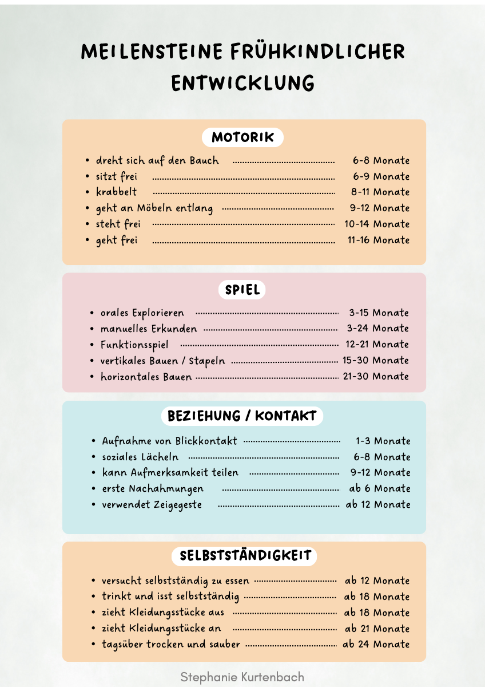
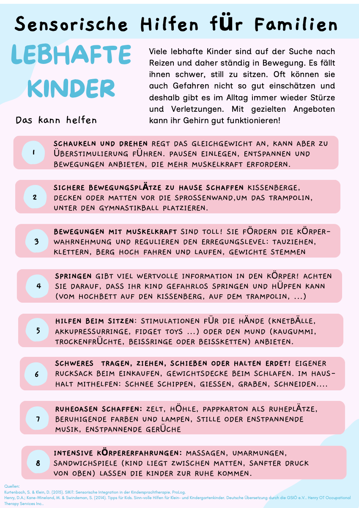
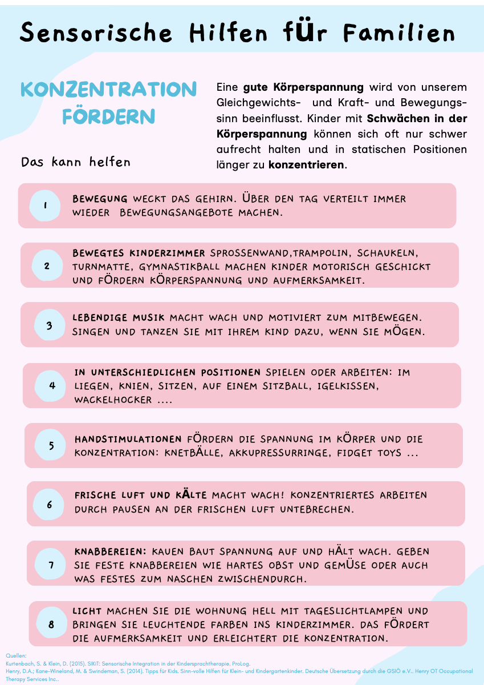
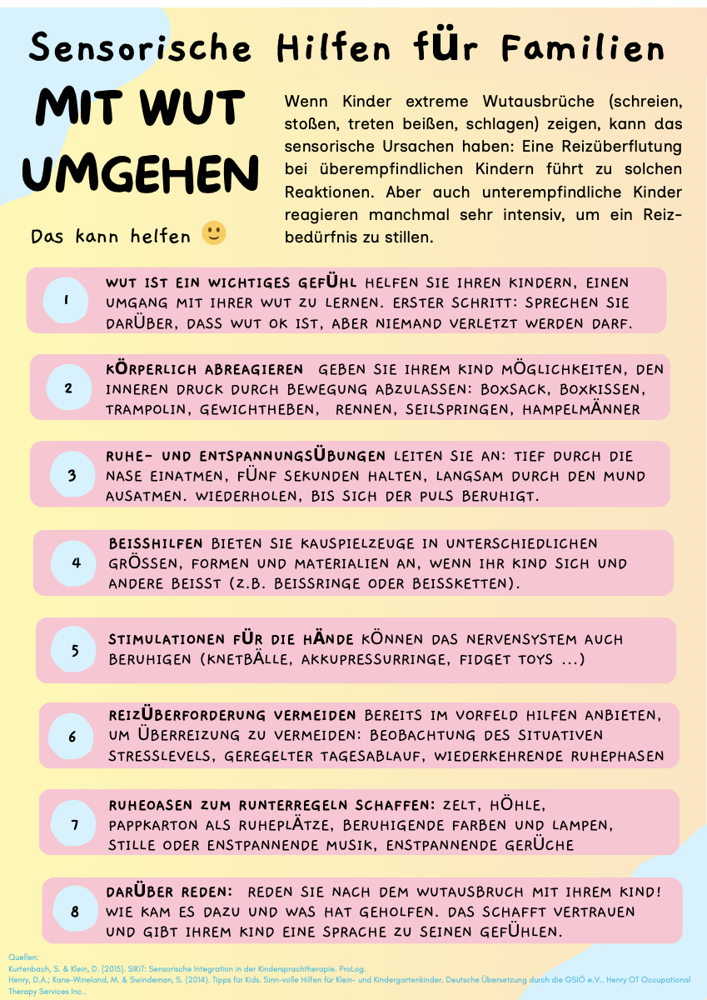
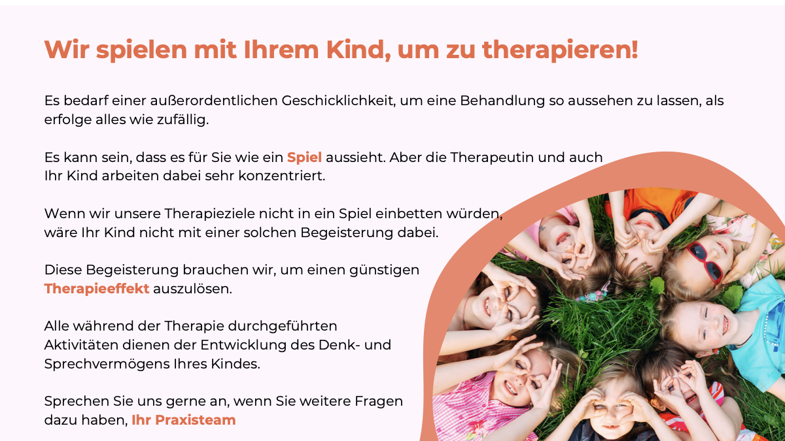
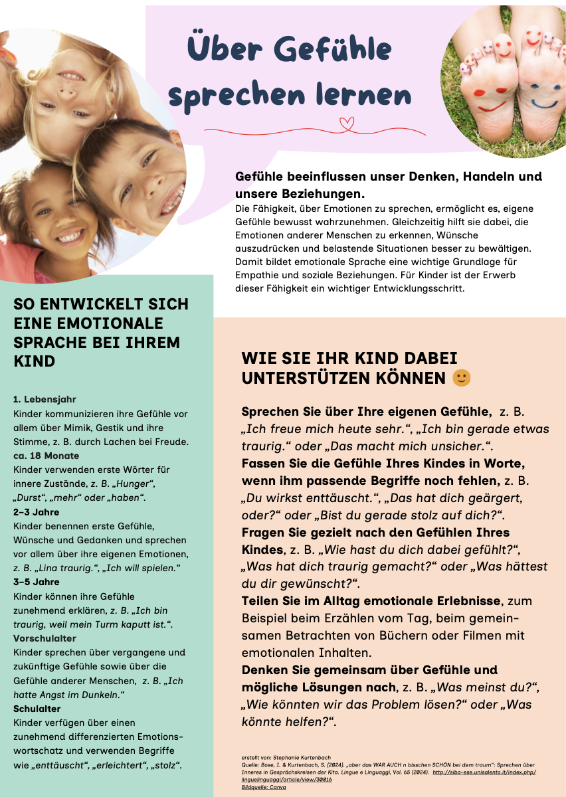

Kostenfreie Materialien
Praxiserprobte Arbeitshilfen aus meiner täglichen Arbeit — direkt einsetzbar in Beratung, Therapie und Familienbegleitung.

Meilensteine frühkindlicher Entwicklung
Übersichtliche Tabelle zu motorischen, sprachlichen und sozialen Entwicklungsschritten — ideal für Beratung und Elterngespräche.
↓ PDF herunterladen
Sensorische Hilfen für lebhafte Kinder
Alltagsstrategien für Familien mit Kindern, die viel Bewegung und starke Reize brauchen. Konkret und direkt einsetzbar.
↓ PDF herunterladen
Konzentration fördern
Sensorische Strategien, die Kindern helfen, zur Ruhe zu kommen und fokussiert zu bleiben — für Alltag, Kita und Schule.
↓ PDF herunterladen
Mit Wut umgehen
Ressourcenorientierte Hilfen für Kinder und Eltern im Umgang mit starken Emotionen und Impulsen im Alltag.
↓ PDF herunterladen
„Sie spielen ja nur mit meinem Kind"
Was therapeutisches Spielen wirklich bedeutet — zum Aufhängen in Praxis, Warteraum oder Elternabend.
↓ PDF herunterladen
Über Gefühle sprechen lernen
Sprachliches Begleitmaterial zur emotionalen Entwicklung — als Gesprächseinstieg mit Kindern und Eltern.
↓ PDF herunterladen